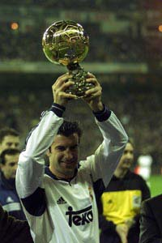

Luís FIGO - 2000

- Un prodigieux accélérateur
Considéré comme l'un des plus grands footballeurs portugais de l'histoire
Figo
remporte le premier Ballon d'Or du 21ème siècle.
Nationalité : Portugaise
Né le : 4 novembre 1972, à Lisbonne (POR)
Taille : 1,81
Poids : 75 kg
Poste : milieu
Clubs : Sporting Lisbonne (1989-1995), FC Barcelone (1995-2000) et Real Madrid (depuis 2000)
Palmarès : Coupe Intercontinentale des clubs 2002 ; Supercoupe d'Europe 1997 et 2002 ; Ligue des champions 2002 ; Coupe des Coupes 1997 ; Championnat d'Espagne 1998, 1999, 2001 et 2003 ; Coupe du Portugal 1995 ; Coupe d'Espagne 1997 et 1998 ; Supercoupe d'Espagne 1998 et 2003 ; Championnat du monde Juniors 1991
Bilan en club : 797 matchs, 132 buts
Bilan en équipe du Portugal : 110 sélections A, 31 buts (1991-2004)
Bilan en phase finale de Coupe du monde : 1 participations, 3 matches (2002)
Palmarès Ballon d'Or : vainqueur en 2000
Classement du Ballon d’Or France Football 2000 :
Luis Figo (Portugal / Real Madrid),
197 pts.
Zinédine Zidane (France / Juventus Turin,
181 pts.
Andriy Shevtchenko (Ukraine / Milan AC),
85 pts.
Retour à l'accueil
 Luís FIGO - 2000
Luís FIGO - 2000